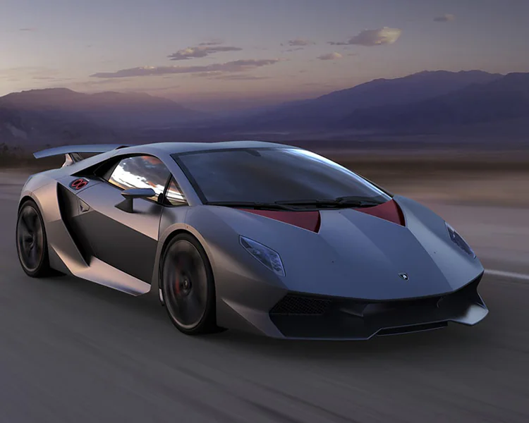
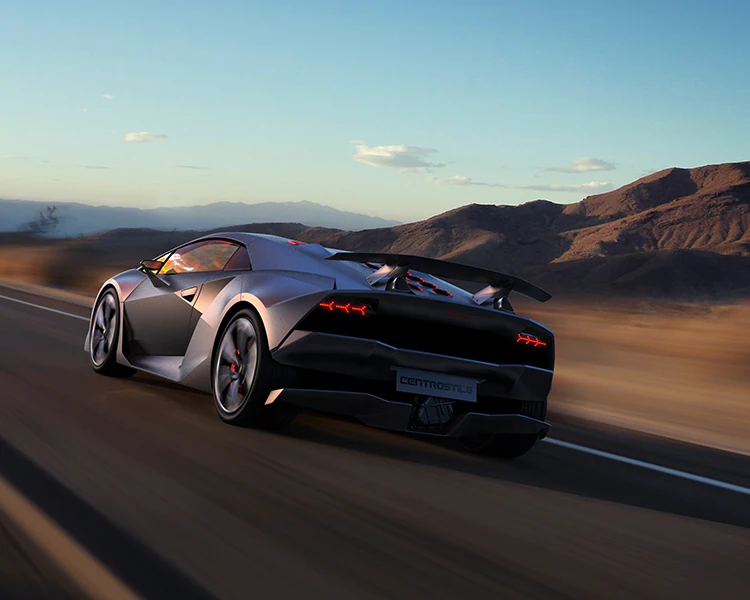

SestoElemento


Production : La Lamborghini Sesto Elemento a été présentée comme concept-car au Mondial de l'Automobile de Paris 2010. Il a été initialement présenté comme un démonstrateur technologique visant à mettre en valeur l'expertise de Lamborghini en matière de construction en fibre de carbone et de matériaux légers.
Même si à l'origine elle n'était pas destinée à la production, Lamborghini a ensuite décidé de produire un nombre très limité d'unités.
Design :Le Sesto Elemento est connu pour son design saisissant et agressif. Il présente des angles vifs, un profil aérodynamique bas et une utilisation importante de composants en fibre de carbone, à la fois pour les éléments structurels et les panneaux de carrosserie. Son design reflète l'engagement de Lamborghini en faveur d'une construction légère.
Châssis en fibre de carbone :Le Sesto Elemento est construit autour d'un châssis monocoque en fibre de carbone.
L'utilisation intensive de fibre de carbone dans sa construction se traduit par un poids à vide incroyablement faible, ce qui le rend exceptionnellement léger.
Moteur : Le Sesto Elemento est propulsé par un moteur V10 de 5,2 litres monté en position centrale, qui produit 570 chevaux. Compte tenu du faible poids de la voiture, cette puissance se traduit par un rapport puissance/poids impressionnant.
Performances : La Sesto Elemento est une supercar axée sur la performance, capable d'accélérer de 0 à 60 mph en seulement 2,5 secondes, avec une vitesse de pointe d'environ 210 mph. Sa maniabilité et son agilité sont encore renforcées par sa construction légère.
Production limitée : Lamborghini a finalement décidé de produire une série très limitée de voitures Sesto Elemento. Seulement 20 exemplaires ont été construits, ce qui en fait un véhicule extrêmement rare et de collection.
Axé sur la piste :Le Sesto Elemento est principalement conçu pour une utilisation sur piste, et de nombreuses unités produites ont été vendues à des collectionneurs et des passionnés qui apprécient ses capacités de haute performance.
Héritage :Le Sesto Elemento est principalement conçu pour une utilisation sur piste, et de nombreuses unités produites ont été vendues à des collectionneurs et des passionnés qui apprécient ses capacités de haute performance.
VEn raison de son extrême rareté et de la combinaison unique de construction légère et de hautes performances, la Sesto Elemento est une pièce de collection très recherchée dans le monde automobile.
La Lamborghini Sesto Elemento témoigne de l'expertise en ingénierie et en conception de Lamborghini. Il démontre l'engagement de la marque à repousser les limites de ce qui est possible dans une supercar, notamment en termes de réduction de poids et de performances.